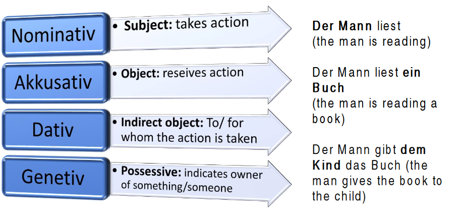

The four cases – Die vier Fälle
Was sind die Kasus/ Fälle? (What are the cases?)
Nouns always have different roles in the sentence. The noun can act as a subject, object, indirect object, or a possession. The case shows the function of a noun or pronoun in a sentence.
There are four cases in German:

Das Buch des Mannes (the man’s book)
Beispiel (example):
Der Ehemann der Nachbarin gibt dem Kind das Geschenk
Subject verb indirect object object
Nominativ Genitiv Dativ Akkusativ
The neighbor's husband gives the gift to the child.
This example includes the four cases together.